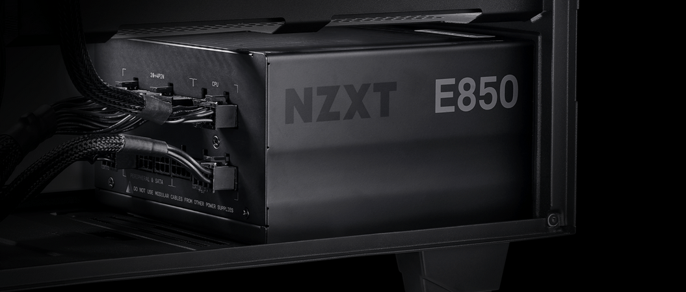
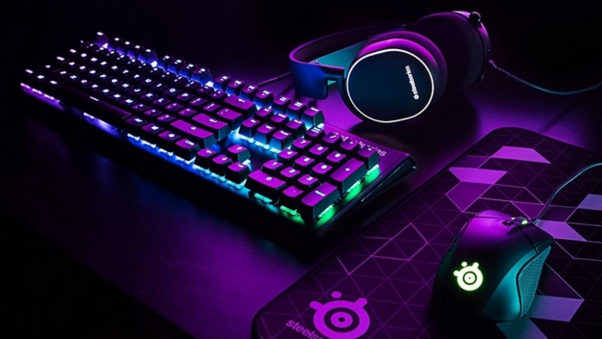
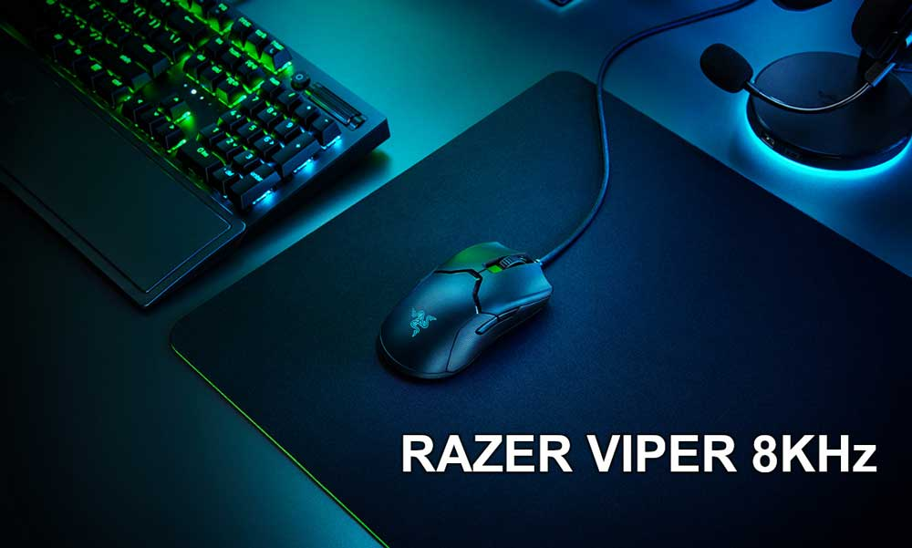
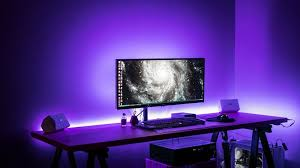
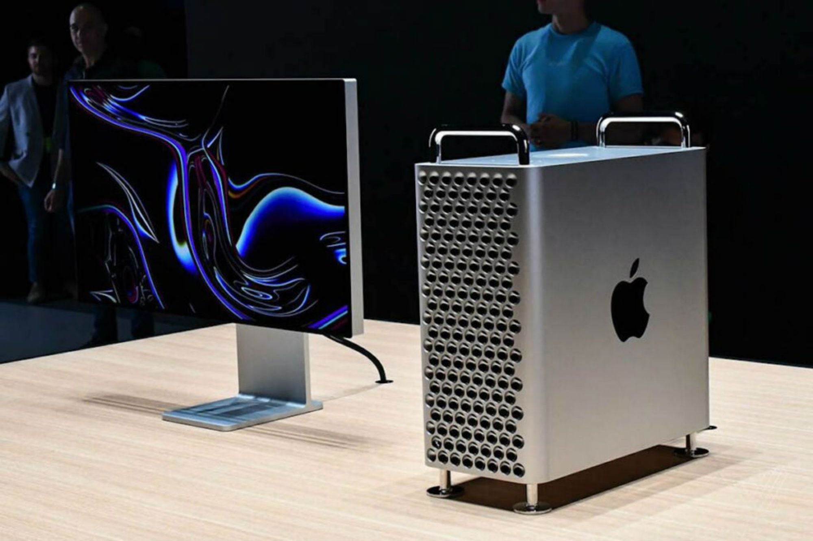

Procesador o cpu(unidad central de procesamiento): se encarga de llevar a cabo las operaciones matematicas y logicas,es decir,
procesa todas las ordenes que les damos,es como el cerebro de la pc, cuanto mejor sea tu procesador mas facil sera llevar a cabo
tareas pesadas como renderizar videos o jugar videojuegos esta formado por:
NUCLEOS:Son pequeñas unidades de procesamientos y dependientes que se encuentran dentro del procesador,hace años los procesadores
solo tenian un nucleo actualmente tienen 2,4,6,8,16,32 y hasta 64 nucleos,se podria decir que mientras mas nucleos mejor ya que hay
mas unidades de procesamiento que se dividen las tareas,pero hay mas aspectos para tener en cuenta
Ghz: Indican la velocidad de procesamiento,es decir,la cantidad de activaciones de procesador,por ejemplo un procesador de 3,6 ghz
tiene 3.600.000.000 activaciones en un segundo
Placa madre: Es una placa que se encuentra atornillada a nuestro gabinete,esta formada por muchos circuitos y muchos componentes electronicos,su funcion es enviar
energia a componentes como el procesador,la memoria ram,o sirve para intermediario para que los componentes se comuniquen entre si,dentro de esta hay muchas cosas
una de ellas es el socket,que es el puerto para el procesador,no cualquier placa madre puede ir con cualquier procesador,ya que el socket de intel no es el mismo al
de amd,en la parte trasera de la placa madre tiene los conectores usb de video,audio,internet,etc,son los que se ven por afuera del gabinete,otra parte importante de
la placa madre es el:
Vrm: Es un conjunto de componentes electronicos que controlan la cantidad de voltajes que le llega al procesador para que el procesador funcione sin sobrecalentarse
le tiene que llegar una cantidad de volts exactos,y de eso se encarga el vrm
Hay muchos tipos de placa madre,por tamaño,las cuales son las mini-itx,las mas pequeñas,micro-atx,un poco mas grande,las atx,las cuales son un tamaño estandar,y las
eatx,que son las mas grandes que se pueden usar.
Para que la placa reciba energia tiene un conector de 20 o 24 pines,depende la placa,tambien se puede encontrar un conector de 4 u 8 pines,para enviar energia al
procesador,la placa ademas del socket tiene otros puertos como los espacios para la memoria ram,puertos para cables satas,puertos pci express,etc

Es una memoria de puerto aleatorio,de ahi su nombre,sirve como intermediario entre procesador y el disco de almacenamiento,como las unidades
de almacenamiento no son tan rapidas,tardaria mucho tiempo en enviarle informacion al procesador por si mismos,almacena los datos de forma momentaria,hay 2 tipos
de memoria ram: dimm y sodimm,la sodimm es la que se utiliza en notbooks o laptops,y la dimm se utiliza en computadoras de escritorio,se pueden encontrar memorias de
muchos formatos,ddr,ddr2,ddr3 y ddr4,hay varias diferencias entre estos formatos pero las mas destacables es su tipo de conexion y las velocidades a las que llega,
esto se identificaria en mhz,mientras mas mhz mejor.

>Estas se conectan al puerto pci express de nuestra placa madre,muchas nos pueden brindar muy buenas potencias para que podamos jugar juegos en muy buena calidad,la
placa de video tiene un procesador grafico en su interior,que al igual que nuestro procesador,esta formado por nucleos pero con la diferencia que son muchos mas,tambien
tiene un dicipador que se usa para disminuir la temperatura de la placa de video,ademas la mayoria trae ventiladores para mejorar la distribucion del aire,la potencia
de los gpu de la placa de video se mide en mhz e indica la velocidad a la que ese procesador grafico trabaja,como el procesador pero para graficos,tanbien las tarjetas
graficas trae una memoria vram,que cumple un papel similar a la de las tarjetas ram,pero con la diferencia de que almacena datos de video como por ejemplo texturas,
siempre de manera momentanea,esta tarjeta grafica tiene velocidades de trabajo mucho mayores a las de las memorias ram,ya que normalmente trabaja
entre los 6000 mhz y 14000 mhz,se pueden encontrar placas de videos con 1,2,4,6,8,11 y hasta 24gb de vram

Es el que nos permite almacenar nuestros datos,como juegos,videos,fotos,documentos y muchas cosas,las unidades de almacenamiento se conectan por un
cable sata directo a la placa madre,lo que permite que este se comunique con los demas componentes,mientras mas sea la capacidad de las unidades de almacenamiento,mas
cosas se van a poder guardar,tambien estas unidades de almacenamientos tienen la tarea de escribir y leer archivos,y de aca nace el tema de los hdd y ssd
Los hdd son discos que tienen en su interior partes mecanicas,la velocidad de lectura y escritura es menor a la de los ssd,pero en muchas ocaciones su capacidad
es mayor a la de los ssd.

Es un componente que se encarga de transformar la corriente alterna de suministro electrico de nuestra casa a corriente continua para nuestros Tambien existen diferentes tipos de perifericos para la computadora,ya sean teclados,mouses,monitores,etc.Para estos productos tambien existe una Hoy en día podes hacerte con un teclado de PC por apenas 500 o 600 pesos, que sirve tanto para jugar como para trabajar. Se llaman tecladosde membrana Un mouse gamer es un ratón normal de ordenador que cuenta con una serie de características y ventajas clave destinadas únicamente a los videojuegos online, Palma o ‘Palm’: es aquel en el que la mano reposa sobre toda la superficie del mouse. Los gamers que usan este tipo de agarre prefieren un mouse gamer grande y Híbrido o ‘Tip’ es una mezcla de los anteriores dos. La mayoría de mouse gamer del mercado son válidos para estos jugadores, aunque siempre se decantarán por
el que se sientan más cómodo. El peso: un mouse gamer ligero es igual de bueno que uno pesado, pero la mayoría de los jugadores prefieren algo más liviano para volar de un punto de la pantalla
a otro. DPI o puntos por pulgadas: determina la sensibilidad del mouse, influyendo, sobre todo, en la precisión. Los gamers experimentados recomiendo utilizar uno con uno 4000 DPI. Botones: La cantidad de botones es uno de los signos que diferencia a un mouse tradicional de uno gamer. Son especialmente útiles para juegos como los MMORPG (juegos de Sensor óptico y sensor láser: Los mouse ópticos emplean un sensor led el cual detecta los cambios que se producen en la superficie, son muy comunes en el mercado y por
consiguiente son más económicos. Lee las especificaciones de cualquier monitor y verás el tiempo de respuesta. Esa es la velocidad con la que el panel puede actualizar cada píxel, medido en milisegundos. No soy alguien que sea un experto en informatica ni mucho menos,por eso decidi llamar a esta seccion:''Mi recomendacion'',ya que con tanta variedad de cosas,como procesadores,placas de Con toda esta informacion es un buen comienzo para el mundo del gaming en computacion,saber esto no esta de mas,ya tendras una idea de lo que te estan intentando vender,es importante siempre
componentes,la fuente de poder tiene distintos cables que sirven para distribuir la energia a los diferentes componentes de nuestra pc,es un componente
el cual hay que elegir bien ya que puede romper todos tus componentes en un apagon u otras situaciones. 
variedad de opciones,para un usuario comun no le es tan importante la calidad de los perifericos,tal vez solo se busca la comodidad o la estetica,
pero para los gamers esto ya es algo mas complicado,mucho mas para los que se dedican profesionalmente a esto,es donde la precisión extra y la mayor
velocidad de juego que ofrecen el teclado y el ratón, no tienen rival. Los shooters, los juegos de estrategia en tiempo real, o los títulos que tienen
asociadas docenas de funciones a los botones, como los MMO (juegos multijugador masivos), se juegan mejor con teclado gaming y ratón.

El teclado
porque tiene una lámina blanda de goma con un material conductor.Este sistema se ha mantenido durante décadasporque es muy barato de fabricar, fiable, y
aguanta mucho. Estos teclados pueden soportar cinco millones de pulsaciones sin problemas. Pero a la hora de jugar, son limitados.Por esa razón nacieron
los teclados mecánicos. Cada tecla tiene un interruptor metálico que se cierra cuando se pulsa dicha tecla, estableciendo la conexión que permite saber
qué tecla has pulsado.

El mouse
esports y competiciones, que normalmente, los otros ratones no tienen.Estos ratones destacan sobre todo por sus diseños que suelen ser totalmente diferentes a
los de uso común. Muchos cuentan con luces a los lados y botones.
Forma y ergonomía: Existen 3 tipos básicos de ratones; palma, garra y el híbrido. Lo que más debes tener en cuenta en la comodidad en cada uno, ya que pasarás
incontable horas utilizandolo
ergonómico para que la mano no se resienta durante largas horas de gaming.Garra o ‘Claw’ en el que la mano queda suspendida sobre el mouse formando una especie
de garra con la mano. Estos modelos suelen ser más pequeños y agiles
multijugadores en línea) y preferibles aquellos modelos que además permiten configurar estos botones, eludiendo activar ciertas funciones desde el teclado y, en tanto, a
celerando el mecanismo.

El monitor
Los fabricantes prueban la rapidez con la que un píxel puede cambiar entre tonos de gris, y en los monitores de juegos, deben estar lo más cerca posible de cero, es decir, 1 ms.
Aún deberían funcionar hasta 5 ms, pero los monitores regulares tienden a ser más lentos, lo que no es práctico para el uso en juegos.
ahora es la frecuencia de actualización. Esa es la cantidad de veces por segundo que un monitor puede actualizar su pantalla, y usamos hertz (Hz) para eso. En los juegos, el mínimo
en estos días es de 60Hz, pero si puedes tener un monitor con 100Hz o más mucho mejor. Las tasas de actualización más rápidas son excelentes para los juegos de disparos en primera
persona o cualquier otro género donde se necesiten respuestas rápidas de los jugadores. La actualización rápida es imprescindible en los juegos competitivos. Si un monitor tiene una
actualización lenta, no solo compromete la velocidad, la calidad de la imagen se ve afectada por el desgarro de la pantalla y, una vez más, el ghosting. Esto último es especialmente
molesto, ya que parece que la imagen se extiende por la pantalla porque el monitor simplemente no puede cumplir con las demandas del hardware de juego.

Mi recomendacion:
videos,memorias,etc,elegi una pc para jugar la cual considero que esta bien calidad precio,ya que por el precio que tiene la considero una muy buena opcion para empezar en esto del gaming y
las computadoras.Pc recomendada:

saber el precio y el rendimiento,y no por tener algo bueno toda tu pc va a ser asi,ya que necesita estar equilibrada,es como un equipo de futbol,un solo jugador bueno no hara ganar cosas.